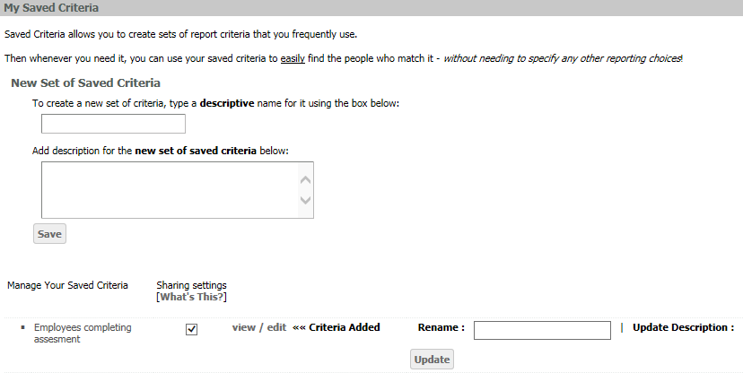
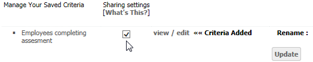
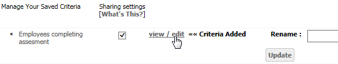
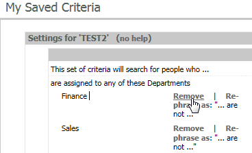

Saved Criteria may be edited from the My Settings page.
To edit a Saved Criteria set:
From the Administrator page, select My Settings.
The My Saved Criteria section on the page allows you to create a new set of Saved Criteria or edit an existing set. The Saved Criteria listed includes those you have created and any that have been shared.

To rename a Saved Criteria list, type the new name after Rename, then click Update.
To update the description, type the new description following Update Description, then click Update.
To delete a Saved Criteria, click delete.
To share a Saved Criteria with other users, check the Sharing settings box.

To edit the criteria, select view/edit.

The criteria settings are summarized at the top of the page under Settings for 'Criteria List name'.
To delete any of the criteria settings, selecting Remove.

To rephrase as a negative (exclude people who meet that criteria), click on Re-phrase as.
For details on adding criteria, see Report Criteria.